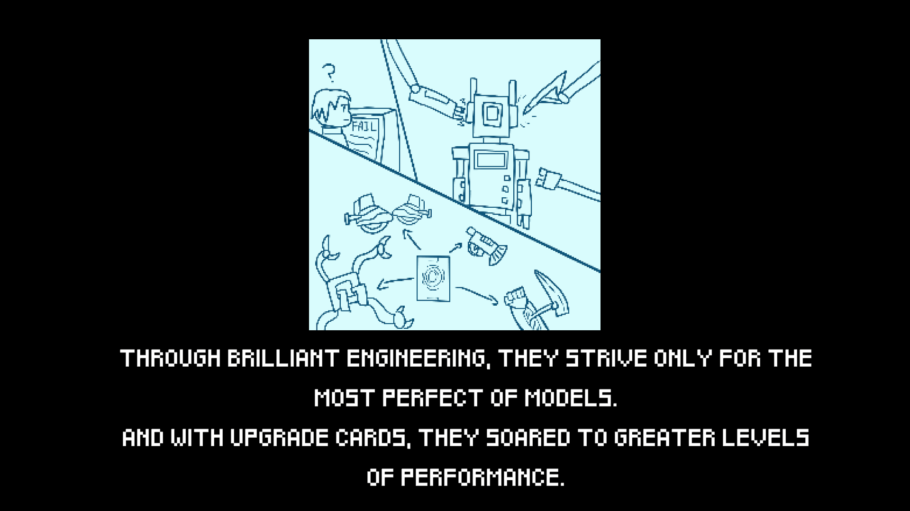
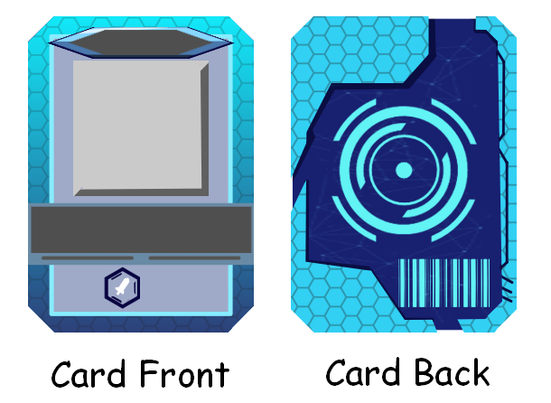
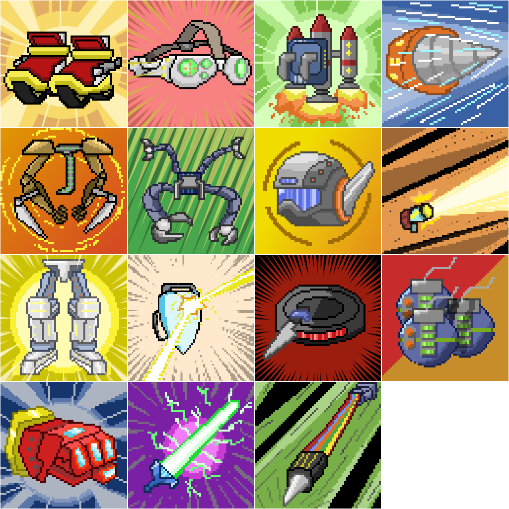
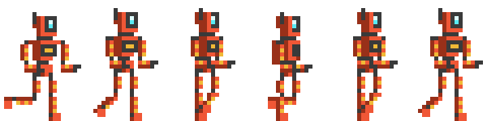
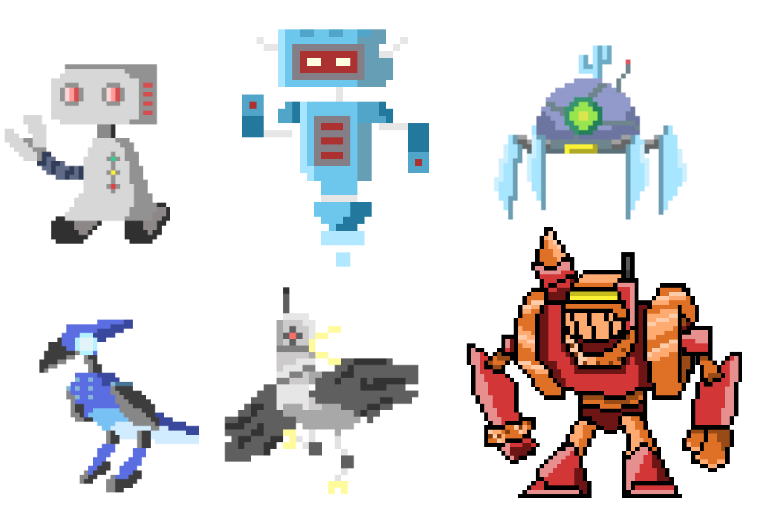

<!DOCTYPE html>
<html>
<head>
    <meta charset="utf-8" />
    <title></title>
</head>
<body>

</body>
</html>
<!DOCTYPE html>
<html lang="en">
<head>
    <meta charset="UTF-8">
    <meta name="viewport" content="width=device-width, initial-scale=1.0">
    <title>Lowell Batacan Portfolio</title>
    <link href="../style.css" rel="stylesheet" />
</head>
<body>
    <div class="container">
        <div class="banner">
            <h1>Lowell Batacan</h1>
            <h3>Gameplay Programmer | Game Designer</h3>
        </div>
        <header>
            <nav>
                <a href="../index.html">Home</a>
                <a href="Projects.html">Projects</a>
                <a href="AboutMe.html">About Me</a>
                <a href="Resume.html">Resume</a>
            </nav>
        </header>


        <!--<section class="boxes">-->
        <div class="box white">
            <div class="box3">
                <h1>Deck-fective</h1>
                <p>
                    <h2>Gameplay</h2>

                    <video width="854" height="480" controls="controls">
                        <source src="../DeckfectiveImages/DeckfectiveGame.mp4" type="video/mp4" />
                    </video>

                    <div class="FileLinks">
                        <h3>Play Here: <a href="https://teitoku-lowliet.itch.io/deck-fective">Itch.io Link</a></h3>
                    </div>


                    <h2>Overview</h2>
                    A 2d turn-based card collecting game with pixel art. Amongst the scrap, a defect rises to the challenge to fight against
                    the robot uprising. Collect upgrades in the form of cards in order to perform combos in a turn-based deck building game.
                    Developed with Unity in collaboration with a team, this project was an exercise in Agile development, using JIRA, and working
                    exclusively in roles.

                    <br />

                    <h2>Goal</h2>
                    I took up the role of artist and narrative designer as I wanted to have practice as those roles in a game development team.
                    Having always worked as a programmer for most of my projects, it was a breath of fresh air to explore other avenues
                    I’m interested in. I took charge of the artistic direction and created drafts of art styles for the team to decide on.
                    From there, I developed a story based around the ideas the rest of the team had planned.

                    <br />

                    <h2>Development</h2>
                    The purpose of this project is practice working strictly within roles that we decided and use Generative AI within development
                    to some capacity. My group was also assigned words that act as our theme for the game we were to design. Our words were “for kids”,
                    “cards”, and “robot uprising”. We discussed some ideas for the game, settling on a top down 2d game where the player goes around
                    to collect cards that represent attacks and effects, which is then used to battle enemies.

                    <br /><br />

                    Since I took up the role of artist and writer, I first wanted to get a solid foundation for the premise of the game.
                    I used Gemini AI as an ideation partner to give 4 examples of premises based around robot uprising and collecting cards.

                    <br /><br />

                    From there, it inspired me to create the setting, which is a robot factory filled with evil robots.
                    The player plays as a defective robot, abandoned by the corporation that created it. Wanting to prove itself,
                    it rose up from the junkyard and now tries to escape the factory where robots have overturned its creators, allowing
                    the defective robot to save the day.

                    <br /><br />

                    To make the story clear for the player, I created an intro comic that plays at the beginning of the game.
                    This helps give context as to what the player is doing and why they are doing what they do.

                    <br /><br />

                    

                    <br /><br />

                    Next I worked on the card art. Talking with the designers, we settled on a total of 20 cards, with 4 card types. The card
                    types are represented in different colors and do different effects if played in a combo. I first made a basic card template
                    where the color can be easily altered. Then I drew 15 different card artwork in a pixel style. Since I couldn’t make  20
                    unique art by the deadline, the designers used my 5 enemy sprites to fill in the rest.

                    <br /><br />

                    
                    <br />
                    

                    <br /><br />

                    After working on the card art, I made the in-game sprites for the player and the enemies. There are a total of 5 enemies
                    and 1 boss enemy that the player fights at the end. I also made animations for them. For the player, I needed an idle animation
                    and walking animation. For the enemies, I made an idle animation, hit animation, and destroyed animation.

                    <br /><br />

                    
                    <br />

                    

                    <br /><br />

                    I didn’t have time to make level sprites, so I let the designers decide and choose a
                    2d sprite pack. They were in charge of the level design, allowing me to focus on the card art and sprites.
                    I also made UI art for the designers and programmers to use.

                </p>
            </div>

        </div>
        <!--</section>-->

        <footer>
            <p>
                <hr />
                <h1>Contact Information</h1>
                <h2>
                    <a href="mailto:lowell.batacan@yahoo.com">lowell.batacan@yahoo.com</a> |
                    <a href="https://www.linkedin.com/in/lowell-batacan/">LinkedIn</a> |
                    <a href="https://teitoku-lowliet.itch.io/">Itch.io</a> |
                    <a href="https://github.com/AwesomeDudex5">GitHub</a>
                </h2>

            </p>
        </footer>
    </div>

    <!-- Scroll-to-top button -->
    <button id="scrollToTopBtn" title="Go to top">Top</button>

    <!-- Link to JavaScript file -->
    <script src="../Top-Button-JS.js"></script>

</body>
</html>